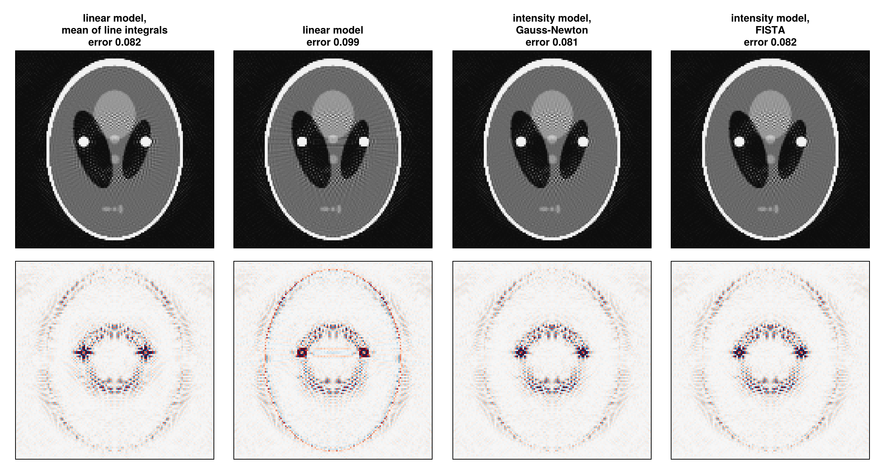

Use the Intensity Model
A detector cell counts the photons of all rays that reach it, and the logarithm is taken after that sum. Where the rays of one cell see different line integrals, at the edges of dense objects, the data then differ from the mean of the line integrals that a linear projector computes. This guide simulates such data, reconstructs them with the linear model, and corrects the result with the intensity model IntensityModel: with Gauss-Newton steps, and with FISTA on its gradient. From Intensities to Line Integrals explains the model.
using CTOperators, ImagePhantoms, RegularizedLeastSquares, LinearOperatorCollection, CairoMakie, LinearAlgebra
using ImageGeoms: axisThe example
A 2D Shepp-Logan phantom of 128 × 128 pixels of 1 mm, scaled by 0.1 and read as attenuation per mm, with two small dense disks (radius 3 mm, 0.5 per mm). A parallel-beam scan with 180 views and 184 cells of 1 mm:
n = 128
image = ImageGeom(; dims=(n, n), deltas=(1.0, 1.0))
shepp = shepp_logan(SheppLoganToft(); fovs=(n, n))
disks = [circle((-20.0, 5.0), 3.0, 0.5), circle((20.0, 5.0), 3.0, 0.5)]
x_true = Float32.(0.1 .* phantom(axis(image, 1), axis(image, 2), shepp, 2) .+
phantom(axis(image, 1), axis(image, 2), disks, 2))
geometry = parallel_beam(; angles=range(0, pi, 181)[1:180], nu=184, nv=1, du=1.0)
op = JosephProjector(image, geometry);The data are simulated with the intensity model and 16 rays per cell (DetectorSampling). For comparison, y_linear holds the mean of the line integrals of the same rays. The largest line integral of the data, and the largest difference between the two:
y = IntensityModel(op; detector=DetectorSampling(RegularPoints(16, 1)))(x_true)
y_linear = sampled(op; detector=DetectorSampling(RegularPoints(16, 1))) * x_true
(largest=maximum(y), difference=maximum(y_linear .- y))(largest = 7.3010883f0, difference = 0.26869845f0)The reconstructions use 4 rays per cell, so they do not use the model of the data. The intensity model of the reconstructions, m, and the linear model with the same rays, A:
rays = DetectorSampling(RegularPoints(4, 1))
m = IntensityModel(op; detector=rays)
A = sampled(op; detector=rays);40 iterations of CGNR, and the relative error to the phantom:
function reconstruct(A, y; iterations=40)
solver = createLinearSolver(CGNR, A; AHA=normalOperator(A), iterations)
reshape(solve!(solver, vec(y)), n, n)
end
relerr(x) = round(norm(x - x_true) / norm(x_true); digits=3);The linear model
Reconstructed with the linear model, once from the mean of the line integrals and once from the data:
x_mean = reconstruct(A, y_linear)
x_lin = reconstruct(A, y)
(mean=relerr(x_mean), data=relerr(x_lin))(mean = 0.082f0, data = 0.099f0)Gauss-Newton steps
Each step linearizes the model at the current image, with the Jacobian CTOperators.jacobian, and solves for the correction with 15 iterations of CGNR. The steps start from the linear reconstruction:
x_gn = copy(x_lin)
for step in 1:3
J = CTOperators.jacobian(m, x_gn)
x_gn .+= reconstruct(J, y .- m(x_gn); iterations=15)
end
relerr(x_gn)0.081f0FISTA on the gradient
IntensityGradient is the gradient of |m(x) - y|² / 2 as an operator, for solvers that take a normal operator, here FISTA of RegularizedLeastSquares.jl. Its step size rho must be given: the default comes from power iterations, which assume a linear operator. At x = 0 the Jacobian is the linear model, so rho here is the inverse of the largest eigenvalue of A'A, from 30 power iterations:
N = normalOperator(A)
v = normalize(ones(Float32, n * n))
for i in 1:30
global v = normalize(N * v)
end
rho = 1 / dot(v, N * v)
G = IntensityGradient(m, vec(y))
solver = FISTA(; AHA=G, rho, iterations=100)
x_fista = reshape(solve!(solver, zeros(Float32, n * n); x0=vec(x_lin)), n, n)
relerr(x_fista)0.082f0The right-hand side is 0, since G already contains the data, and the iteration starts at x0, the linear reconstruction. FISTA divides its convergence test by the norm of the right-hand side, so it runs all 100 iterations.
The images
The window 0 to 0.05 shows the soft tissue; the second row shows the difference to the phantom (-0.02 to 0.02):

The first image shows what the linear model reaches when the data are means of line integrals: the pattern around the disks comes from the reconstruction itself (40 iterations, pixels of 1 mm), not from the logarithm. On the data, the linear model adds a band between the disks and a ring along the edge of the skull: there, some rays of a cell pass through dense material and others next to it. The Gauss-Newton steps and FISTA remove both and reach the error of the first image. This is one example, with data free of noise.
Notes
- The intensity model takes the same samples as
sampled:source=aFocalSpot,detector=aDetectorSampling. - It builds on
stacked, one projector per sample, and runs the samples sequentially. A detector sampling in it needs points that are the same in every cell (RegularPoints,DiskPoints,Points). - Each evaluation of the model or its gradient projects (and back projects) every sample: 4 rays per cell cost 4 projections.
IntensityGradientlists in its docstring whatFISTAneeds.
This page was generated using Literate.jl.